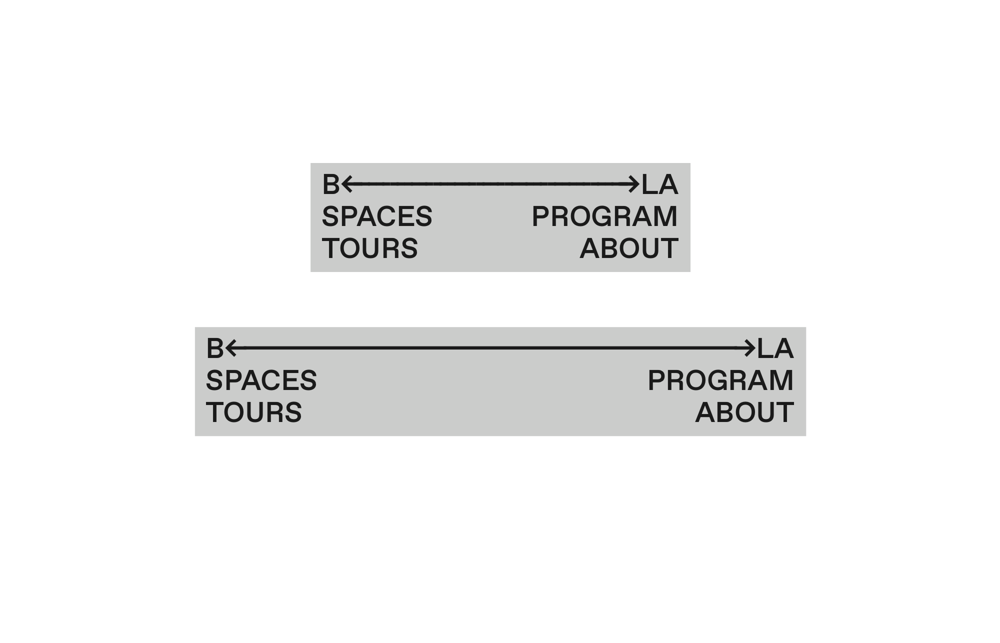
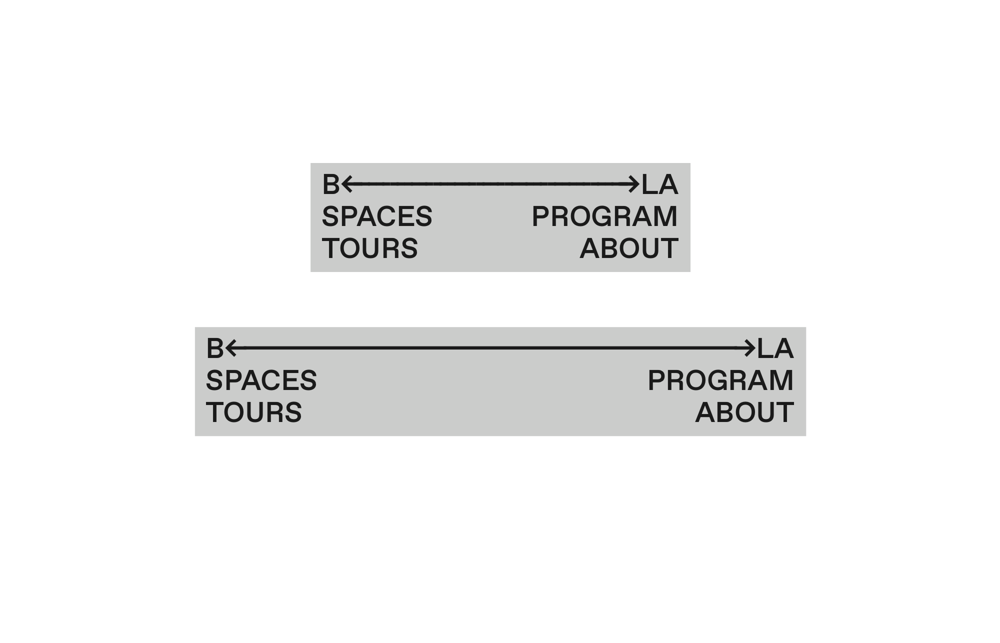
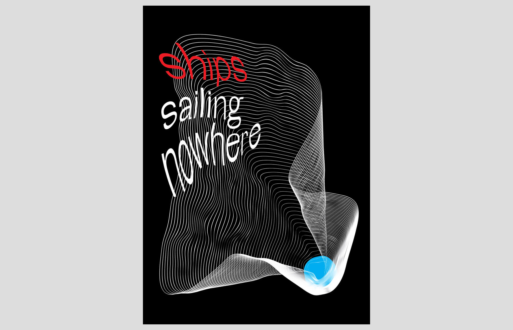
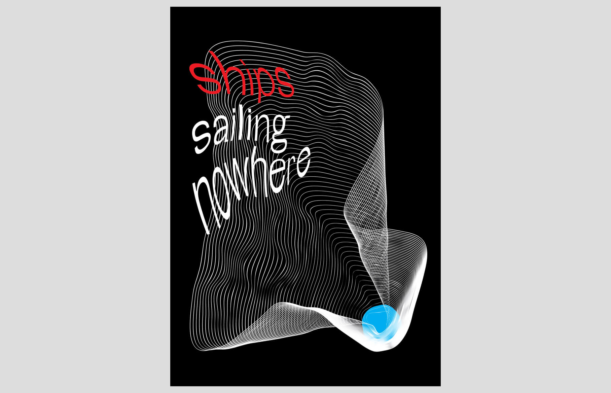

DRAG FOR INFO
Aircash is the first mobile wallet in Croatia. Users can top up their account, withdraw cash, send money and use a multitude of services. I was in charge of reimagining both iOS and Android apps UI&UX — together with defining and designing completely new features aimed at increasing user retention and decreasing customer aquistion cost.
Aircash<
iOS & Android, UI+UX, 2020

DRAG FOR INFO
B-LA CONNECT is a platform promoting the cooperation and interlinking between the
two sister cities’ creative communities. Over 40 art spaces from Berlin and LA are participating.
I had the pleasure of designing and developing the mobile version of their website.
Mobile web, design & development, 2019
 


DRAG FOR INFO
The first Croatian brand for personalised accessories.
Custom drawn letterforms reflect customization each product goes through.
Visual identity, 2018

DRAG FOR INFO
1. In Continuo — short film about looking for a place where one belongs.
2. Ships sailing Nowhere — an experimental movie about people without cause.
2. Ships sailing Nowhere — an experimental movie about people without cause.
Poster design
2018/2019
 
